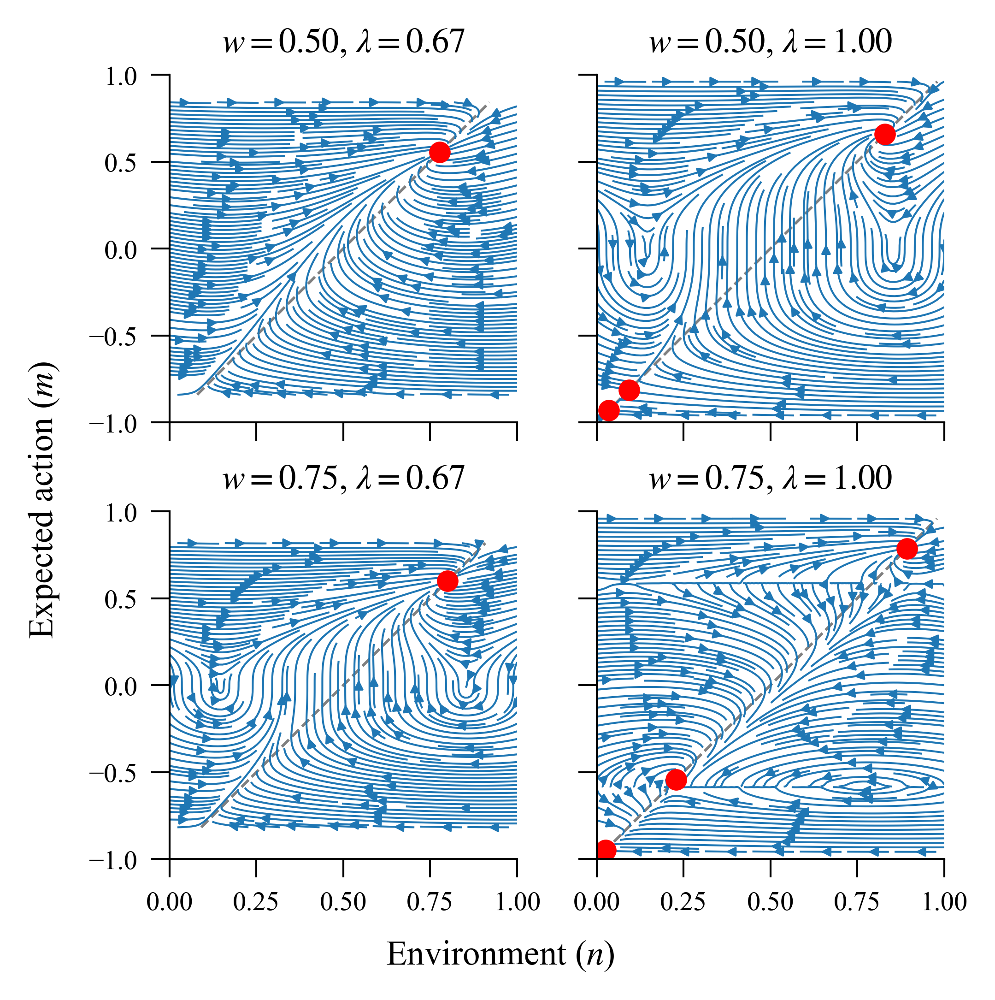
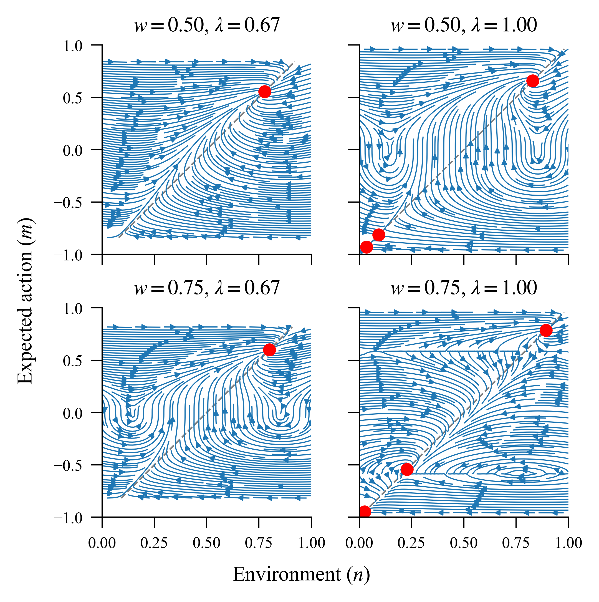

Climate-related Decision-making ABM
This project uses agent-based modelling to investigate the feedback cycle between
public support for climate action and individually-perceived climate change severity.
We extend existing work in this area to explore how system dynamics and equilibria
differ in the coupled model when agents are heterogeneous in their preferences and
perception of the environment. You can find the associated report
here.
 

{kind=link}
All code is written in Python 3.13. The core model,
abm_project.vectorised_model.VectorisedModel, is implemented as a Python
class wrapping efficient vectorised (Numpy) data structures. The model is designed
with extensibility in mind, with key components modularised and configurable at
model initialisation. For instance, it is straightforward to implement new methods
for updating agents’ local environments, which are passed to the model as functions.
The repository itself is structured as a Python package which contains reusable components. Specific experiments are separated out into scripts, which are orchestrated by a Makefile. We use uv to ensure a consistent, version-locked Python environment for experimentation.
Core modules in the Python package (abm_project) include:
abm_project.vectorised_model: The core model, used in all of our experiments.
abm_project.mean_field: A mean-field approximation to the core model. Includes functions to solve for equilibria, expected mean action, and running simulations using the derived mean-field dynamical system.
abm_project.oop_model: A predecessor to the
VectorisedModel, whose implementation prioritises ease-of-use and descriptivity. Note: theOOPModelis not actively maintained, and does not reflect the current state ofVectorisedModel.abm_project.kraan: An implementation of the 2D lattice model described in Kraan et al, which inspired our work.
Contents
Check out the Getting started section for details on how to contribute to this project, or Reproducing experiments to reproduce our experiments.
The repository is licensed under the MIT License.